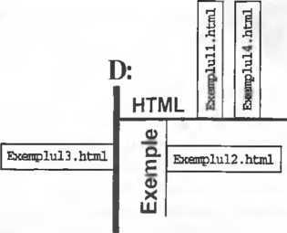
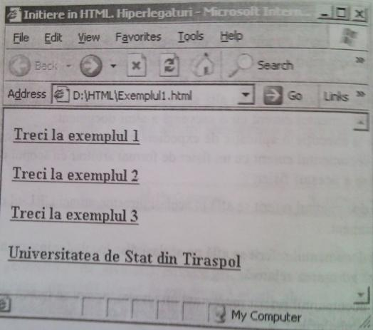
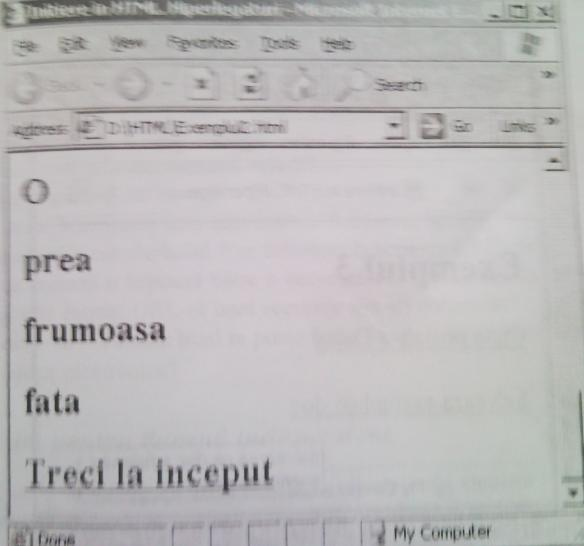
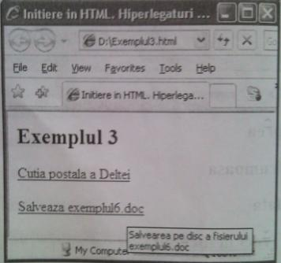
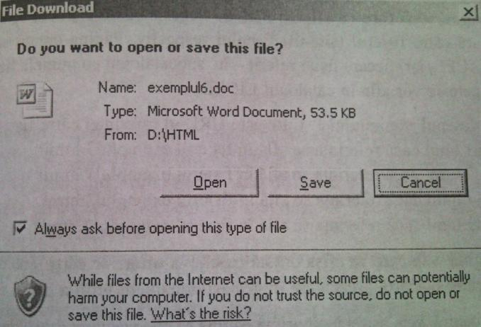

Legături
În lecţia 1 am menţionat că legăturile (se mai numesc link-uri) reprezintă,
probabil, cea mai importantă caracteristică a limbajului HTML.
O legătură transformă un text obişnuit în hipertext
sau hiperlegătură, prin intermediul căruia se poate ajunge rapid
către altă secvenţă a documentului curent sau către alt document
(pe acelaşi sau pe alt server). Legăturile sînt zone active ale paginii web,
în sensul că la executarea unui click de mouse pe ele, browser-ul va actualiza pagina.
· Pentru a pune în evidenţă o hiperlegătură se folosesc etichetele <A> (de la "ancoră") şi </A> . Atributul href al etichetei <A> este obligatoriu. Valoarea acestui atribut este
I numele fişierului .html către care se face legătura. Numele acestui fişier se scrie între
simbolurile " şi Textul sau imaginea cuprinsă între etichetele <A> şi </A> devine zonă
activă.
Astfel, o hiperlegătură se declară în modul următor:
<A href="URL"> text sau imagine</A> ,
unde URL ("Uniform Resourse Locator" - identificator unic al resursei) este numele
fişierului-destinaţie.
Observaţie
în această lecţie vom examina doar legături, în care zona activă este un text.
În general o hiperlegătură poate:
a) lega documentul curent cu un document aflat în acelaşi catalog (director);
b) lega documentul curent cu un document aflat pe acelaşi disc local,
c) lega documentul curent cu un alt site;
d) lega documentul curent cu altă secvenţă a aceluiaşi document;
e) lega documentul curent cu o secvenţă a altui document:
f) lansa la execuţie o aplicaţie de expediere a mesajelor electronice;
g) lega documentul curent cu un fişier de format arbitrar cu scopul creării unei copii pe disc a acestui fişier.
a) Dacă documentul referit se află în acelaşi director, atunci URL-ul este chiar numele cestui document.
b) Dacă documentul referit se află pe acelaşi disc local, dar într-un alt catalog, atunci se utilizează adresarea relativă.
c) Dacă documentul referit reprezintă un alt site, atunci se indică adresa acestui site, crisă între simbolurile " şi "
Exemplul 1
Prezentăm conţinutul fişierului D:\HTML\exemplul4.html, care conţine legături către:
· fişierul D:\HTML\exemplul1.html(fişierul referit se află în acelaşi ca-
talog);
· fişierul D:\HTML\EXEMPLE\
exemplul2.html (fişierul referit se află
în subcatalogul EXEMPLE al catalogului curent);
· fişierul D:\exemplul3.html (fişierul
referit se află pe discul D: , deci pe
un nivel ierarhic imediat superior);
· site-ul Colegiului Politehnic din Chisinau: http://www.cptc.md.

<HTML>
<Head> <Title> Iniţiere in HTML. Hiperlegaturi</Title> </Head>
<Body>
<H4> <a href="exemplul1.html" > Treci la exemplul 1 </a>
<p> <a href="EXEMPLE\exemplul2.html"> Treci la exemplul 2 </a> </p>
<p> <a href="\exemplul3 .html"> Treci la exemplul 3 </a> </p>
<p> <a href="http:\\www.cptc.md"> Colegiul Politehnic din Chisinau </a> </p>
</H4>
</Body>
</HTML>

d) O legătură către o altă secvenţă a aceluiaşi document se numeşte ancoră cu nume. în acest caz URL-ul este numele atribuit secvenţei, precedat de simbolul #. Pentru a atribui unei secvenţe un nume se va scrie o ancoră de genul:
<A name=numele secvenţei> </A> , unde numele secvenţei se scrie între simbolurile " şi "
e) URL-ul către o secvenţă a altui document este format din numele fişierului şi numele secvenţei, ultimul fiind precedat de simbolul #. De exemplu, URL-ul secvenţei cu numele capitolul2 al fişierului exemplul1.html din acelaşi catalog este
"exemplull.html#capitolul2"
Exemplul 2
<HTML>
<Head>
<Title> Iniţiere in HTML. Hiperlegaturi</Title>
</Head>
<Body>
<H2>
<a name="inceput"/a>
<P>A</P> <P>fost</P> <P>odata</P> <P>ca-n</P> <P>povesti</P> <P>A</P> <P>fost</P> <P>ca</P> <P>niciodata</p>
<P>Din</P> <P>rude</P> <P>mari</P> <P>imparatesti</P>
<P>O</P> <P>prea</P> <P>frumoasa</P> <P>fata</p>
<a href="#inceput"> Treci la inceput </a>
</H2>
</Body>
</HTML>

f) Pentru lansarea la execuţie a unei aplicaţii de expediere a mesajelor electronice (se presupune că această aplicaţie este instalată pe calculatorul utilizatorului) se va scrie
o ancoră de genul:
<A name="mailto: adresa e-mail validă">.
g) Pentru a crea o legătură către un fişier de format arbitrar cu scopul creării unei copii pe disc a acestui fişier sau cu scopul lansării la execuţie a aplicaţiei care va interpreta astfel de fişiere se va utiliza o ancoră de genul <A href="URL"> text, unde URL este numele fisierului, iar text este zona activa.
Observaţie
Etichetei <A> i se poate ataşa atributul title, care se foloseşte pentru a furniza informaţii suplimentare despre semnificaţia legăturii, atunci cînd mouse-ul este plasat asupra ei. Valoarea atributului title se scrie între simbolurile " şi ".
Exemplul 3
<HTML>
<Head> <Title> Iniţiere in HTML. Hiperlegaturi</Title>
<H2>Exemplul 3</H2>
</Head>
<Body>
<a href=mailto: delta_mi@mail.md> Cutia poştala a Deltei </a>
<pxa href="exemplul6.doc" title-"Salvearea pe disc a fişierului exemplul6.doc "> Salveaza exemplul.doc </p>
</Body>
</HTML>

În urma executării unui click pe legătura salvează exemplul6.doc va apărea următoarea fereastră (care ne permite să creăm pe disc o copie a fişierului exemplul6.doc sau să deschidem acest fişier în aplicaţia Microsoft Word);

Întrebări de control
1. Ce semnificaţie au legăturile pentru o pagină web?
2. Care sînt etichetele folosite pentru declararea unei hiperlegături?
3. Numiţi atributul obligatoriu pentru eticheta . Ce valoarea poate avea acest atribut?
4. Ce este o zonă activă?
5. Explicaţi sensul expresiei a actualiza o pagină web.
6. Care este forma generală de declarare a unei hiperlegături?
7. Care elemente ale unei pagini web pot fi hiperlegături?
8. La ce poate referi o hiperlegătură?
9. Unde se poate afla documentul referit?
10. Ce este o ancoră cu nume?
11. Cum se atribuie nume unei secvenţe de document html?
12. Explicaţi în ce caz simbolul # se foloseşte la scrierea URL-ului.
13. Cum se creează o legătură către o secvenţă din acelaşi document?
14. Din ce este format URL-ul unei secvenţe din alt document?
15. Cum dintr-un document html se poate lansa la execuţie o aplicaţie de expediere a mesajelor electronice?
Sarcini pentru lucrul independent
1. Creaţi o pagină web care va afişa o listă cu disciplinele studiate într-un semestru. Fiecare element al listei va fi o referinţă către un fişier (aflat în catalogul în care se află pagina web) cu informaţia despre disciplina respectivă.
2. Creaţi o pagină web care va afişa o listă ordonată cu denumirea unor universităţi din Republica Moldova. Fiecare element al listei va fi o hiperlegăturăcătre site-ul universităţii respective.
3. Creaţi o pagină web care va afişa o listă de licee. Fiecare element al listei va fi o hiperlegătură către fişierul (site-ul) liceului respectiv. Pagina creatăse va afla în catalogul LICEE, iar fiecare fişier referit - în subcatalogul cu numele liceului. Toate subcataloagele se vor afla în catalogul LICEE.
4. Examinaţi desenul exemplului 1. Care este URL-ul referinţei către fişierul:
a) exemplul1 .html dacă referinţa se află în fişierul exemplul3.html;
b) exemplul2.html dacă referinţa se află în fişierul exemplul1.html;
c) exemplul4.html dacă referinţa se află în fişierul exemplul2.html;
d) exemplul3.html dacăreferinţa se află în fişierul exemplul2.html?
5. Creaţi o pagină web care va afişa o listă cu cîteva titluri de cărţi. Fiecare titlu va fi o referinţăcătre o scurtă prezentare în acelaşi document html a cărţii cu acest titlu.
6. Creaţi două pagini web, astfel încît prima pagină să afişeze cinci titluri de reţetă pentru prepararea respectiv a ciorbei, a plăcintei, a tortului, a cartofilor prăjiţi, a micilor, iar pagina a doua - descrierea completă a reţetelor respective. Titlurile din prima paginăvor fi hiperlegături către secvenţele corespunzătoare din pagina a doua.
7. Examinaţi desenul. Care este URL-ul referinţei către fişierul:
a) fisierl.html dacă referinţa se află în fişierul fisier4.html;
b) fisier2.html dacă referinţa se află în fişierul fisier3.html;
c) fisier4.html dacă referinţa se află în fişierul fisier2.html;
d) fisier4.html dacă referinţa se află în fişierul fisier3.html?

8. Examinaţi desenul. în ce mapăse află documentul html care conţine referinţa dacă URL-ul ei este:
a) "Mapa4\fisier4.html";
b) "Mapa 1 \Mapa2\Mapa4\fisier4.html";
c) "A Mapal\Mapa2\Mapa4\fisier4.html";
d) "A ..\ Mapa3\fisier4.html"?
9. Creaţi două pagini web, astfel încît prima va conţine cîteva legături către diferite secvenţe ale paginii a doua, iar pagina a doua - cîteva legături către diferite secvenţe ale primei pagini.
10. Creaţi o pagină web care va afişa o listă cu legături către fişiere de diferite tipuri pentru a fi deschise spre vizionare sau stocare.